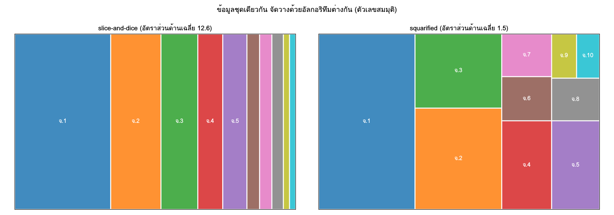

18 ข้อมูลลำดับชั้นและการ drill-down
ข้อมูลของโครงการมีโครงสร้างลำดับชั้นโดยธรรมชาติ สถานีอยู่ในจังหวัด จังหวัดอยู่ในภาค และทุกภาครวมเป็นประเทศ เวลาก็มีลำดับชั้นเช่นกัน ชั่วโมงรวมเป็นวัน วันรวมเป็นเดือน เดือนรวมเป็นปี ผู้ใช้แดชบอร์ดในบทที่ 20 จะเริ่มจากภาพรวมระดับประเทศ แล้ว “เจาะลง” (drill-down) ไปยังภาค จังหวัด และสถานีที่สนใจ ตามหลัก overview first ของ Shneiderman ในบทที่ 12
คำถามที่ดูเหมือนง่ายแต่มักทำผิดคือ ค่าของระดับบนคำนวณจากระดับล่างอย่างไร ค่าเฉลี่ยของภาคเท่ากับค่าเฉลี่ยของค่าเฉลี่ยจังหวัดหรือไม่ มัธยฐานของภาคหาได้จากมัธยฐานของจังหวัดหรือไม่ คำตอบคือ “ไม่” ในหลายกรณี และความผิดพลาดนี้ทำให้ตัวเลขในแดชบอร์ดขัดแย้งกันเองระหว่างระดับ บทนี้อธิบายหลักการรวมข้อมูลข้ามระดับให้สอดคล้องกัน กราฟสำหรับข้อมูลลำดับชั้น และการดำเนินการแบบ OLAP ซึ่งเป็นภาษากลางของการสำรวจข้อมูลหลายมิติ บทนี้สั้นกว่าบทอื่นตามที่กำหนดไว้ในโครงสร้างของเล่ม
วัตถุประสงค์การเรียนรู้
เมื่อจบบทนี้ ผู้อ่านสามารถ
- อธิบายโครงสร้างลำดับชั้นของข้อมูลโครงการ และตรวจความถูกต้องของลำดับชั้น
- จำแนกตัวชี้วัดที่รวมข้ามระดับได้และไม่ได้ และคำนวณค่าของทุกระดับให้สอดคล้องกัน
- สร้าง treemap และ sunburst ที่ใช้ขนาดและสีอย่างถูกต้อง
- ใช้การดำเนินการแบบ OLAP ได้แก่ roll-up, drill-down, slice และ dice ด้วย SQL
- ออกแบบลำดับการ drill-down สำหรับแดชบอร์ด
18.1 โครงสร้างลำดับชั้น: ภาค → จังหวัด → สถานี
ลำดับชั้นของโครงการ
ลำดับชั้น (hierarchy) คือโครงสร้างที่แต่ละหน่วยในระดับล่างเป็นสมาชิกของหน่วยเดียวในระดับบน ข้อมูลของโครงการมีลำดับชั้นสองมิติหลัก
| มิติ | ระดับจากบนลงล่าง | ที่มาของข้อมูล |
|---|---|---|
| พื้นที่ | ประเทศ → ภาค → จังหวัด → สถานี | ตาราง stations (คอลัมน์ region, province, station_id) |
| เวลา | ปี → เดือน → วัน → ชั่วโมง | คอลัมน์ ts และ date (บทที่ 7) |
ลำดับชั้นเชิงพื้นที่ของโครงการกำหนดด้วยตาราง mapping จังหวัดกับภาคที่เขียนขึ้นเอง เพราะ Air4Thai ไม่ได้ส่งภาคมาให้ (บทที่ 6) การแบ่งภาคมีหลายระบบ เช่น ระบบสี่ภาค และระบบหกภาคทางภูมิศาสตร์ที่แยกภาคตะวันออกและภาคตะวันตกออกจากภาคกลาง โครงการต้องเลือกระบบเดียว บันทึกไว้ในพจนานุกรมข้อมูล และใช้ให้ตรงกันทุกที่
ตรวจความถูกต้องของลำดับชั้น
ลำดับชั้นที่ถูกต้องต้องมีคุณสมบัติว่า ทุกหน่วยในระดับล่างมีหน่วยแม่เพียงหน่วยเดียว ถ้าจังหวัดหนึ่งถูกบันทึกเป็นสองภาค (เช่น สะกดชื่อภาคต่างกัน หรือแก้ข้อมูลไม่ครบ) ค่าของจังหวัดนั้นจะถูกนับในสองภาค และผลรวมของภาคจะไม่เท่ากับผลรวมของประเทศ
-- จังหวัดที่มีมากกว่าหนึ่งภาค (ควรได้ผลว่าง)
SELECT province, COUNT(DISTINCT region) AS n_regions, LIST(DISTINCT region) AS regions
FROM stations
GROUP BY province
HAVING COUNT(DISTINCT region) > 1;
-- สถานีที่ไม่มีภาคหรือจังหวัด (ควรได้ผลว่าง)
SELECT station_id FROM stations WHERE region IS NULL OR province IS NULL;การตรวจเหล่านี้ควรอยู่ใน src/validate.py ร่วมกับกฎอื่นของบทที่ 9 ไม่ใช่ทำครั้งเดียวใน notebook เพราะเมื่อมีสถานีใหม่ ปัญหาอาจเกิดขึ้นใหม่ได้
ลำดับชั้นที่ไม่สมดุล
ลำดับชั้นของโครงการ ไม่สมดุล (unbalanced) คือจำนวนหน่วยลูกต่างกันมาก กรุงเทพมหานครอาจมีหลายสิบสถานี ขณะที่หลายจังหวัดมีสถานีเดียวหรือไม่มีเลย ความไม่สมดุลนี้มีผลสำคัญสองข้อ ข้อแรก ค่าของจังหวัดที่มีสถานีเดียวคือค่าของสถานีนั้น ซึ่งอาจไม่แทนทั้งจังหวัด (บทที่ 17) ข้อสอง วิธีรวมข้อมูลขึ้นไประดับบนที่ต่างกันให้ผลต่างกันมาก ซึ่งเป็นหัวข้อถัดไป
18.2 ความสอดคล้องของการรวมข้อมูลข้ามระดับ
ตัวชี้วัดสามประเภท
ตัวชี้วัดแบ่งตามคุณสมบัติการรวมข้ามระดับเป็นสามประเภท (Gray และคณะ 1997)
| ประเภท | ความหมาย | ตัวอย่าง | ค่าระดับบนหาจากระดับล่างได้อย่างไร |
|---|---|---|---|
| distributive (บวกได้) | ค่าระดับบนคำนวณจากค่าระดับล่างด้วยฟังก์ชันเดียวกัน | จำนวนวัน จำนวนวันเกินมาตรฐาน ค่าสูงสุด ค่าต่ำสุด | รวม (SUM) หรือหาค่าสูงสุดของค่าระดับล่าง |
| algebraic (รวมได้ถ้าเก็บองค์ประกอบ) | คำนวณได้จากตัวชี้วัด distributive จำนวนจำกัด | ค่าเฉลี่ย (= ผลรวม / จำนวน) สัดส่วน ส่วนเบี่ยงเบนมาตรฐาน | เก็บผลรวมและจำนวนของระดับล่าง แล้วคำนวณใหม่ |
| holistic (รวมไม่ได้) | ต้องใช้ข้อมูลระดับล่างสุดทั้งหมด | มัธยฐาน เปอร์เซ็นไทล์ จำนวนค่าที่ไม่ซ้ำ | คำนวณใหม่จากข้อมูลระดับล่างสุดเท่านั้น |
ค่าเฉลี่ยของค่าเฉลี่ย
ข้อผิดพลาดที่พบบ่อยที่สุดคือการคำนวณค่าเฉลี่ยระดับบนจากค่าเฉลี่ยของระดับล่างโดยไม่ถ่วงน้ำหนัก ค่าเฉลี่ยเป็นตัวชี้วัด algebraic การรวมที่ถูกต้องต้องใช้ผลรวมและจำนวนของระดับล่าง
\[ \bar{x}_{\text{ภาค}} = \frac{\sum_{p} \sum_{i \in p} x_i}{\sum_{p} n_p} = \frac{\sum_{p} n_p \bar{x}_p}{\sum_{p} n_p} \neq \frac{1}{P}\sum_{p} \bar{x}_p \tag{18.1}\]
โดยที่ \(p\) คือจังหวัดในภาค \(n_p\) คือจำนวนสถานี-วันของจังหวัด \(p\) \(\bar{x}_p\) คือค่าเฉลี่ยของจังหวัด และ \(P\) คือจำนวนจังหวัด ค่าเฉลี่ยของค่าเฉลี่ย (ด้านขวาสุด) ให้น้ำหนักทุกจังหวัดเท่ากัน ไม่ว่าจะมีข้อมูลมากหรือน้อย ตัวอย่างตัวเลขสมมุติ ภาคหนึ่งมีสองจังหวัด จังหวัด ก มีข้อมูล 900 สถานี-วัน ค่าเฉลี่ย 30 µg/m³ จังหวัด ข มี 100 สถานี-วัน ค่าเฉลี่ย 50 µg/m³ ค่าเฉลี่ยรวมที่ถูกต้องคือ \((900 \times 30 + 100 \times 50)/1000 = 32\) µg/m³ แต่ค่าเฉลี่ยของค่าเฉลี่ยคือ \((30 + 50)/2 = 40\) µg/m³
หลายคำตอบที่ “ถูก”
อย่างไรก็ตาม ค่าเฉลี่ยของค่าเฉลี่ยไม่ได้ผิดเสมอ มันตอบคำถามที่ต่างออกไป ตารางต่อไปนี้เปรียบเทียบวิธีรวมสามแบบของข้อมูลสังเคราะห์
WITH base AS (
SELECT s.region, s.province, d.station_id, d.pm25_mean
FROM daily_pm25_clean AS d JOIN stations AS s USING (station_id)
WHERE d.is_complete AND d.date < DATE '2024-01-01'
),
per_station AS (SELECT region, station_id, AVG(pm25_mean) AS m FROM base GROUP BY region, station_id),
per_province AS (SELECT region, province, AVG(pm25_mean) AS m, MEDIAN(pm25_mean) AS med
FROM base GROUP BY region, province)
SELECT b.region,
ROUND(AVG(b.pm25_mean), 2) AS pooled,
ROUND(ANY_VALUE(st.mean_of_stations), 2) AS mean_of_stations,
ROUND(ANY_VALUE(pr.mean_of_provinces), 2) AS mean_of_provinces,
ROUND(MEDIAN(b.pm25_mean), 2) AS median_pooled,
ROUND(ANY_VALUE(pr.median_of_provinces), 2) AS median_of_province_medians
FROM base AS b
JOIN (SELECT region, AVG(m) AS mean_of_stations FROM per_station GROUP BY region) AS st USING (region)
JOIN (SELECT region, AVG(m) AS mean_of_provinces, MEDIAN(med) AS median_of_provinces
FROM per_province GROUP BY region) AS pr USING (region)
GROUP BY b.region
ORDER BY b.region;# ผลลัพธ์ (ตัวอย่าง)
# ข้อมูลสังเคราะห์ 50 สถานี ไม่ใช่ข้อมูล Air4Thai จริง
region pooled mean_of_stations mean_of_provinces median_pooled median_of_province_medians
0 กลาง 25.53 25.49 25.63 23.2 24.05
1 ตะวันออกเฉียงเหนือ 25.43 25.46 25.44 22.9 21.80
2 เหนือ 28.11 28.14 27.71 23.7 23.50
3 ใต้ 13.33 13.33 13.32 12.6 12.30| วิธีรวม | ตอบคำถาม | น้ำหนัก |
|---|---|---|
| pooled (จากสถานี-วันทั้งหมด) | สถานี-วันทั่วไปในภาคมีค่าเท่าใด | สถานีที่มีข้อมูลมากและจังหวัดที่มีสถานีมากมีน้ำหนักมาก |
| ค่าเฉลี่ยของสถานี | สถานีทั่วไปในภาคมีค่าเท่าใด | ทุกสถานีเท่ากัน |
| ค่าเฉลี่ยของจังหวัด | จังหวัดทั่วไปในภาคมีค่าเท่าใด | ทุกจังหวัดเท่ากัน |
ในข้อมูลสังเคราะห์ ภาคเหนือมีค่าเฉลี่ยแบบ pooled 28.11 แต่ค่าเฉลี่ยของจังหวัด 27.71 µg/m³ ความต่างเล็กน้อยในตัวอย่างนี้ แต่ในข้อมูลจริงที่ไม่สมดุลมาก เช่น จังหวัดหนึ่งมีหลายสิบสถานีและจังหวัดอื่นมีสถานีเดียว ความต่างอาจใหญ่จนลำดับของภาคเปลี่ยน หลักการคือ เลือกวิธีรวมจากคำถาม เขียนไว้ใน questions.md และใช้วิธีเดียวกันทุกระดับและทุกกราฟ การรวมแบบใดก็ได้ที่ไม่สม่ำเสมอระหว่างกราฟจะทำให้ตัวเลขในแดชบอร์ดขัดกัน ซึ่งทำลายความน่าเชื่อถือ
มัธยฐานรวมไม่ได้
มัธยฐานเป็นตัวชี้วัด holistic มัธยฐานของมัธยฐานจังหวัดไม่เท่ากับมัธยฐานของภาค และไม่มีวิธีคำนวณที่ถูกต้องจากมัธยฐานของระดับล่าง ในตัวอย่าง ภาคกลางมีมัธยฐานแบบ pooled 23.2 แต่มัธยฐานของมัธยฐานจังหวัด 24.05 µg/m³ ทิศทางของความคลาดเคลื่อนก็ไม่แน่นอน ภาคตะวันออกเฉียงเหนือคลาดไปทางต่ำ (21.80 เทียบกับ 22.9) ส่วนภาคกลางคลาดไปทางสูง การคำนวณมัธยฐานหรือเปอร์เซ็นไทล์ของทุกระดับต้องกลับไปใช้ข้อมูลระดับล่างสุดเสมอ ซึ่งเป็นเหตุผลหนึ่งที่ฐานข้อมูลเชิงวิเคราะห์อย่าง DuckDB มีประโยชน์ คำนวณจากข้อมูลรายวันได้เร็วพอที่ไม่ต้องเก็บค่าสรุปไว้ล่วงหน้า
สัดส่วนวันเกินมาตรฐาน
สัดส่วนวันเกินมาตรฐานเป็นตัวชี้วัด algebraic ที่รวมได้ถูกต้องง่ายที่สุด ถ้าเก็บ จำนวนวันเกินมาตรฐาน และ จำนวนวันทั้งหมด (ซึ่งเป็น distributive ทั้งคู่) ไว้ในทุกระดับ แล้วคำนวณสัดส่วนเป็นขั้นสุดท้าย
SELECT s.region, s.province,
COUNT(*) FILTER (WHERE d.pm25_mean > 37.5) AS n_over,
COUNT(*) AS n_days,
ROUND(COUNT(*) FILTER (WHERE d.pm25_mean > 37.5) / COUNT(*), 3) AS share_over
FROM daily_pm25_clean AS d JOIN stations AS s USING (station_id)
WHERE d.is_complete AND d.date < DATE '2024-01-01'
GROUP BY ROLLUP (s.region, s.province)
ORDER BY s.region NULLS FIRST, s.province NULLS FIRST;ROLLUP คำนวณผลรวมย่อยของทุกระดับในคำสั่งเดียว (หัวข้อ 18.4) และเพราะสัดส่วนของทุกระดับคำนวณจากจำนวนนับของสถานี-วันโดยตรง ตัวเลขทุกระดับจึงสอดคล้องกันโดยอัตโนมัติ
18.3 treemap และ sunburst: ★ อัลกอริทึมการจัดวาง
treemap
treemap แสดงข้อมูลลำดับชั้นด้วยสี่เหลี่ยมซ้อนกัน แต่ละหน่วยเป็นสี่เหลี่ยมที่มีพื้นที่เป็นสัดส่วนกับค่าหนึ่ง และหน่วยลูกถูกวางภายในสี่เหลี่ยมของหน่วยแม่ (Shneiderman 1992) treemap ใช้การเข้ารหัสสองช่องทาง คือ ขนาด และ สี ซึ่งต้องเลือกให้ถูก
- ขนาดต้องเป็นค่าที่บวกกันได้ (distributive) เช่น จำนวนสถานี-วัน หรือจำนวนประชากร เพราะพื้นที่ของหน่วยแม่คือผลรวมของพื้นที่หน่วยลูก ถ้าใช้ค่าเฉลี่ย PM2.5 เป็นขนาด พื้นที่ของภาคจะเป็นผลรวมของค่าเฉลี่ยจังหวัด ซึ่งไม่มีความหมาย
- สีใช้กับค่าที่ต้องการเปรียบเทียบ เช่น สัดส่วนวันเกินมาตรฐาน
import plotly.express as px
h = con.execute("""
SELECT COALESCE(s.region, 'ไม่ระบุ') AS region, COALESCE(s.province, 'ไม่ระบุ') AS province,
s.name_th, COUNT(*) AS n_days,
COUNT(*) FILTER (WHERE d.pm25_mean > 37.5) AS n_over
FROM daily_pm25_clean AS d JOIN stations AS s USING (station_id)
WHERE d.is_complete AND d.date < DATE '2024-01-01'
GROUP BY ALL
""").df()
h["share_over"] = h["n_over"] / h["n_days"]
path = [px.Constant("ประเทศไทย"), "region", "province", "name_th"]
fig = px.treemap(h, path=path, values="n_days", color="share_over",
color_continuous_scale="YlOrRd", labels={"share_over": "สัดส่วนวันเกินมาตรฐาน"})COALESCE แทนค่าว่างด้วย “ไม่ระบุ” เพราะ Plotly ไม่ยอมให้หน่วยที่เป็นค่าว่างมีหน่วยลูก และ px.Constant สร้างรากของต้นไม้ ข้อดีของการระบุ values คือ Plotly คำนวณสีของหน่วยแม่เป็น ค่าเฉลี่ยถ่วงน้ำหนักด้วย values ของหน่วยลูก เมื่อสีคือสัดส่วนและน้ำหนักคือจำนวนวัน ค่าเฉลี่ยถ่วงน้ำหนักจึงเท่ากับสัดส่วนแบบ pooled พอดี เมื่อตรวจกับข้อมูลสังเคราะห์ สีของรากเท่ากับ 0.1192 ซึ่งตรงกับ 8,061 วันเกินมาตรฐานจาก 67,631 สถานี-วันที่คำนวณด้วย SQL แต่ถ้าสีเป็นตัวชี้วัด holistic เช่น มัธยฐาน สีของหน่วยแม่จะเป็นค่าเฉลี่ยถ่วงน้ำหนักของมัธยฐาน ซึ่งไม่ใช่มัธยฐานของหน่วยแม่ ต้องระบุในคำบรรยายหรือคำนวณสีของทุกระดับเอง
sunburst
sunburst แสดงลำดับชั้นเดียวกันด้วยวงแหวนซ้อนกัน รากอยู่ตรงกลาง ระดับที่ลึกขึ้นอยู่วงนอก ขนาดของแต่ละส่วนแทนด้วยมุม ใช้ px.sunburst ด้วยพารามิเตอร์เดียวกับ treemap ข้อดีคือเห็นโครงสร้างของลำดับชั้นชัดกว่า ข้อเสียคือเปรียบเทียบขนาดด้วยมุมยากกว่าพื้นที่ของสี่เหลี่ยม (บทที่ 11) และวงนอกมีพื้นที่มากกว่าวงในโดยธรรมชาติ ซึ่งทำให้หน่วยระดับล่างดูสำคัญเกินจริง
| ด้าน | treemap | sunburst | bar chart แยกระดับ |
|---|---|---|---|
| เปรียบเทียบขนาดอย่างแม่นยำ | ปานกลาง (พื้นที่) | ต่ำ (มุม) | สูง (ความยาว) |
| เห็นโครงสร้างลำดับชั้น | ปานกลาง | ดี | ต่ำ |
| รองรับหน่วยจำนวนมาก | ดี | ปานกลาง | ต่ำ |
| คลิกเพื่อ drill-down ใน Plotly | ได้ | ได้ | ต้องสร้างเอง |
ถ้าคำถามคือการเปรียบเทียบค่าระหว่างจังหวัดอย่างแม่นยำ bar chart เรียงตามค่าภายในแต่ละภาคยังคงเป็นตัวเลือกที่ดีที่สุด treemap และ sunburst เหมาะกับการเห็นภาพรวมของโครงสร้าง และเป็นจุดเริ่มต้นของการ drill-down
อัลกอริทึมการจัดวาง ★
หัวข้อย่อยนี้ไม่ได้สอนในชั้นเรียน อ่านข้ามได้โดยไม่กระทบความเข้าใจบทถัดไป
การวางสี่เหลี่ยมให้มีพื้นที่ตามค่าทำได้หลายวิธี และวิธีที่เลือกมีผลต่อการอ่านมาก
- slice-and-dice อัลกอริทึมดั้งเดิมของ Shneiderman แบ่งสี่เหลี่ยมของหน่วยแม่ตามแนวนอนในระดับหนึ่ง และตามแนวตั้งในระดับถัดไปสลับกัน (Shneiderman 1992) ข้อดีคือรักษาลำดับของหน่วย ข้อเสียคือสร้างสี่เหลี่ยมผอมยาวเมื่อมีหน่วยจำนวนมาก ซึ่งเปรียบเทียบพื้นที่ได้ยากและติดป้ายไม่ได้
- squarified ของ Bruls และคณะ จัดหน่วยเป็นแถวโดยเลือกให้อัตราส่วนด้านของสี่เหลี่ยมใกล้ 1 มากที่สุด (Bruls และคณะ 2000) ได้สี่เหลี่ยมที่ใกล้จัตุรัส อ่านและติดป้ายง่าย แต่ลำดับของหน่วยไม่คงที่ หน่วยที่มีค่าใกล้กันอาจอยู่ห่างกัน และเมื่อข้อมูลเปลี่ยนเล็กน้อย การจัดวางอาจเปลี่ยนมาก
- ordered และ strip treemap เป็นทางสายกลางที่พยายามรักษาลำดับไว้บางส่วน โดยยอมให้อัตราส่วนด้านแย่ลงเล็กน้อย

ภาพที่ 18.1 แสดงข้อมูลชุดเดียวกันจัดวางสองแบบ slice-and-dice มีอัตราส่วนด้านเฉลี่ย 12.6 สี่จังหวัดสุดท้ายผอมจนติดป้ายไม่ได้ ส่วน squarified มีอัตราส่วนด้านเฉลี่ย 1.5 แต่จังหวัดที่ 3 อยู่เหนือจังหวัดที่ 2 ลำดับจึงไม่ตรงกับค่า Plotly ใช้อัลกอริทึมแบบ squarified เป็นค่าเริ่มต้น และเปลี่ยนได้ด้วย fig.update_traces(tiling_packing="slice-dice")
18.4 การดำเนินการแบบ OLAP: roll-up, drill-down, slice, dice
data cube
แนวคิด OLAP (online analytical processing) ที่บทที่ 6 แนะนำไว้ มองข้อมูลเป็น data cube ซึ่งมีหลายมิติ (dimension) เช่น พื้นที่ เวลา และชนิดสารมลพิษ แต่ละเซลล์ของ cube เก็บตัวชี้วัด (measure) เช่น จำนวนวันเกินมาตรฐาน การสำรวจข้อมูลคือการ “หมุน” และ “ตัด” cube นี้ด้วยการดำเนินการสี่แบบ (Chaudhuri และ Dayal 1997)
| การดำเนินการ | ความหมาย | ตัวอย่าง | SQL |
|---|---|---|---|
| roll-up | รวมขึ้นไประดับบนของลำดับชั้น | จังหวัด → ภาค หรือ วัน → เดือน | GROUP BY ระดับบน, ROLLUP |
| drill-down | เจาะลงระดับล่างของลำดับชั้น | ภาค → จังหวัด → สถานี | GROUP BY ระดับล่าง พร้อม WHERE ของหน่วยแม่ |
| slice | ตรึงค่าของมิติหนึ่ง | เฉพาะปี ค.ศ. 2023 | WHERE year = 2023 |
| dice | เลือกช่วงของหลายมิติ | ภาคเหนือและภาคกลาง ช่วงกุมภาพันธ์ถึงเมษายน | WHERE region IN (...) AND month BETWEEN 2 AND 4 |
| pivot | หมุนมิติจากแถวเป็นคอลัมน์ | ภาคเป็นแถว ปีเป็นคอลัมน์ | PIVOT (บทที่ 8) |
ROLLUP, CUBE และ GROUPING SETS
SQL มีส่วนขยายของ GROUP BY ที่คำนวณหลายระดับการรวมในคำสั่งเดียว (Gray และคณะ 1997)
ROLLUP (a, b, c)คำนวณกลุ่ม (a, b, c), (a, b), (a) และ () คือทุกระดับตามลำดับชั้น เหมาะกับลำดับชั้นภาค → จังหวัด → สถานีCUBE (a, b)คำนวณทุกชุดค่าผสม (a, b), (a), (b) และ () เหมาะกับมิติที่ไม่เป็นลำดับชั้นของกันและกัน เช่น ภาคกับปีGROUPING SETS (...)ระบุชุดของกลุ่มที่ต้องการเองทั้งหมด
SELECT s.region, s.province, d.station_id,
COUNT(*) FILTER (WHERE d.pm25_mean > 37.5) AS n_over,
COUNT(*) AS n_days,
ROUND(COUNT(*) FILTER (WHERE d.pm25_mean > 37.5) / COUNT(*), 3) AS share_over,
GROUPING(s.region, s.province, d.station_id) AS level
FROM daily_pm25_clean AS d JOIN stations AS s USING (station_id)
WHERE d.is_complete AND d.date < DATE '2024-01-01'
GROUP BY ROLLUP (s.region, s.province, d.station_id)
ORDER BY s.region NULLS FIRST, s.province NULLS FIRST, d.station_id NULLS FIRST
LIMIT 5;# ผลลัพธ์ (ตัวอย่าง)
# ข้อมูลสังเคราะห์ 50 สถานี ไม่ใช่ข้อมูล Air4Thai จริง
region province station_id n_over n_days share_over level
0 None None None 8061 67631 0.119 7
1 กลาง None None 3583 29917 0.120 3
2 กลาง กรุงเทพมหานคร None 1624 10718 0.152 1
3 กลาง กรุงเทพมหานคร s23 122 1297 0.094 0
4 กลาง กรุงเทพมหานคร s24 421 1395 0.302 0แถวที่คอลัมน์เป็น NULL คือแถวผลรวมของระดับนั้น เช่น แถวแรกคือทั้งประเทศ แถวที่สองคือทั้งภาคกลาง ปัญหาคือ NULL จากการรวมแยกไม่ออกจาก NULL ที่เป็นข้อมูลจริง (เช่น สถานีที่ไม่มีจังหวัด) ฟังก์ชัน GROUPING() แก้ปัญหานี้ คืนค่าเป็นบิตที่บอกว่าคอลัมน์ใดถูกรวม ค่า 0 คือระดับสถานี 1 คือระดับจังหวัด 3 คือระดับภาค และ 7 คือระดับประเทศ ใช้กรองหรือติดป้ายระดับในแดชบอร์ดได้
ผลลัพธ์นี้แสดงความสอดคล้องข้ามระดับที่ต้องการ จำนวน 8,061 วันเกินมาตรฐานของประเทศเท่ากับผลรวมของทุกภาค และสัดส่วนของทุกระดับคำนวณจากจำนวนนับโดยตรง ข้อมูลยังแสดงความต่างภายในจังหวัดเดียวกัน สถานี s24 ในกรุงเทพมหานครเกินมาตรฐาน 30.2% ของวัน ขณะที่ s23 เพียง 9.4% ค่าระดับจังหวัด (15.2%) จึงซ่อนความต่างนี้ไว้ ซึ่งเป็นเหตุผลที่ต้องมี drill-down
ออกแบบลำดับการ drill-down
เมื่อออกแบบแดชบอร์ดในบทที่ 20 ควรกำหนดล่วงหน้าว่าแต่ละระดับแสดงอะไร ตัวอย่างการออกแบบที่สอดคล้องกับคำถามของโครงการ
| ระดับ | คำถามหลัก | กราฟ | ตัวชี้วัด |
|---|---|---|---|
| ประเทศ | ภาพรวมเป็นอย่างไร ภาคใดน่ากังวล | แผนที่ choropleth หรือ treemap | สัดส่วนวันเกินมาตรฐานแบบ pooled |
| ภาค | จังหวัดใดในภาคน่ากังวล ฤดูฝุ่นเป็นอย่างไร | bar chart จังหวัดเรียงตามค่า heatmap เดือน × ปี | สัดส่วนวันเกินมาตรฐาน มัธยฐานรายเดือน |
| จังหวัด | สถานีต่างกันหรือไม่ | small multiples ของสถานี | ค่าเฉลี่ยรายวัน จำนวนสถานี |
| สถานี | รายละเอียดตามเวลาเป็นอย่างไร มีความผิดปกติหรือไม่ | อนุกรมเวลารายวันพร้อมเส้นมาตรฐานและธงค่าผิดปกติ | ค่าเฉลี่ยรายวัน ความครบถ้วนของข้อมูล |
หลักการสำคัญคือ ทุกระดับต้องใช้นิยามของตัวชี้วัดเดียวกัน และคำนวณจากข้อมูลระดับล่างสุดด้วยวิธีที่สอดคล้องกัน ผู้ใช้ที่เห็นว่าภาคเหนือเกินมาตรฐาน 16.9% แล้วเจาะลงไป ต้องเห็นจังหวัดในภาคเหนือที่ถ้ารวมแบบเดียวกันแล้วได้ 16.9% เช่นเดียวกัน
กรณีศึกษา: ตัวเลขในแดชบอร์ดไม่ตรงกันระหว่างระดับ
สถานการณ์ ระหว่างทดสอบแดชบอร์ดรุ่นแรก อาจารย์ที่ปรึกษาพบว่า หน้าภาพรวมแสดงค่าเฉลี่ย PM2.5 ของภาคเหนือเป็น 27.7 µg/m³ แต่เมื่อคลิกเข้าไปดูภาคเหนือ หน้าภาคแสดง 28.1 µg/m³ และหน้าจังหวัดแสดงมัธยฐานของภาคเป็นค่าที่ไม่ตรงกับหน้าอื่นเลย
การวินิจฉัย ทีมตรวจโค้ดของแต่ละหน้าและพบว่า
- หน้าภาพรวมคำนวณค่าของภาคจากตาราง
province_summaryที่เตรียมไว้ล่วงหน้า โดยเฉลี่ยค่าเฉลี่ยของจังหวัด (ค่าเฉลี่ยของค่าเฉลี่ย) - หน้าภาคคำนวณจาก
daily_pm25_cleanโดยตรง (pooled) - หน้าจังหวัดคำนวณ “มัธยฐานของภาค” จากมัธยฐานของจังหวัด ซึ่งรวมข้ามระดับไม่ได้
การแก้ไข
- ตกลงนิยามตัวชี้วัดหลักใน
questions.mdคือ สัดส่วนวันเกินมาตรฐานแบบ pooled จากสถานี-วันที่ข้อมูลครบ และมัธยฐานรายวันแบบ pooled - เขียนฟังก์ชันเดียวใน
src/ที่คำนวณตัวชี้วัดของทุกระดับด้วยGROUP BY ROLLUPจากข้อมูลระดับล่างสุด และให้ทุกหน้าใช้ฟังก์ชันนี้ - สำหรับมัธยฐาน คำนวณจากข้อมูลรายวันของแต่ละระดับโดยตรง ไม่สร้างตารางสรุปของมัธยฐาน
- เพิ่มการทดสอบใน
tests/ที่ตรวจว่าจำนวนวันเกินมาตรฐานของประเทศเท่ากับผลรวมของภาค และผลรวมของภาคเท่ากับผลรวมของจังหวัด
บทเรียน ความไม่สอดคล้องระหว่างระดับไม่ได้เกิดจากข้อผิดพลาดในการคำนวณ ทุกตัวเลข “ถูก” ตามวิธีที่ใช้ แต่เกิดจากการที่แต่ละส่วนของระบบใช้นิยามต่างกัน การแก้ที่ยั่งยืนคือรวมนิยามไว้ที่เดียวและทดสอบความสอดคล้องอัตโนมัติ
ข้อผิดพลาดที่พบบ่อย
| ข้อผิดพลาด | ทำไมผิด | ทำอย่างไรแทน |
|---|---|---|
| เฉลี่ยค่าเฉลี่ยของระดับล่างโดยไม่ถ่วงน้ำหนัก | ให้น้ำหนักหน่วยที่มีข้อมูลน้อยเท่ากับหน่วยที่มีข้อมูลมาก | เก็บผลรวมและจำนวน หรือคำนวณจากระดับล่างสุด |
| คำนวณมัธยฐานของระดับบนจากมัธยฐานระดับล่าง | มัธยฐานเป็นตัวชี้วัด holistic รวมข้ามระดับไม่ได้ | คำนวณใหม่จากข้อมูลระดับล่างสุด |
| ใช้ค่าเฉลี่ยหรือสัดส่วนเป็นขนาดของ treemap | พื้นที่ของหน่วยแม่กลายเป็นผลรวมที่ไม่มีความหมาย | ใช้ค่าที่บวกกันได้ เช่น จำนวนวันหรือประชากร |
| ไม่ตรวจว่าจังหวัดหนึ่งอยู่ภาคเดียว | ค่าถูกนับซ้ำในสองภาค ผลรวมไม่สอดคล้อง | ตรวจด้วย SQL ใน src/validate.py |
แยก NULL จาก ROLLUP กับ NULL จริงไม่ออก |
ติดป้ายระดับผิด | ใช้ GROUPING() |
| แต่ละหน้าของแดชบอร์ดคำนวณตัวชี้วัดเอง | นิยามไม่ตรงกัน ตัวเลขขัดกันระหว่างระดับ | รวมการคำนวณไว้ในฟังก์ชันเดียวใน src/ |
| ใช้ sunburst เปรียบเทียบขนาดอย่างแม่นยำ | มุมเปรียบเทียบได้ยาก วงนอกดูใหญ่เกินจริง | ใช้ bar chart เมื่อต้องการความแม่นยำ |
| แสดงเฉพาะค่าระดับจังหวัด | ซ่อนความต่างระหว่างสถานีในจังหวัดเดียวกัน | ให้ผู้ใช้ drill-down ถึงระดับสถานี |
สรุป
- ข้อมูลโครงการมีลำดับชั้นเชิงพื้นที่ (ประเทศ → ภาค → จังหวัด → สถานี) และเชิงเวลา ลำดับชั้นต้องถูกต้อง คือทุกหน่วยมีหน่วยแม่เดียว และมักไม่สมดุล
- ตัวชี้วัดแบ่งเป็น distributive (บวกได้) algebraic (รวมได้ถ้าเก็บองค์ประกอบ) และ holistic (รวมไม่ได้) มัธยฐานและเปอร์เซ็นไทล์ต้องคำนวณจากข้อมูลระดับล่างสุดเสมอ
- ค่าเฉลี่ยแบบ pooled ค่าเฉลี่ยของสถานี และค่าเฉลี่ยของจังหวัด ตอบคำถามต่างกัน ต้องเลือกจากคำถามและใช้ให้สม่ำเสมอทุกระดับ
- เก็บจำนวนนับ เช่น จำนวนวันเกินมาตรฐานและจำนวนวันทั้งหมด แล้วคำนวณสัดส่วนเป็นขั้นสุดท้าย ทำให้ทุกระดับสอดคล้องกันโดยอัตโนมัติ
- treemap ใช้ค่าที่บวกกันได้เป็นขนาด และค่าที่เปรียบเทียบเป็นสี Plotly คำนวณสีของหน่วยแม่เป็นค่าเฉลี่ยถ่วงน้ำหนักด้วยขนาด sunburst เห็นโครงสร้างชัดแต่เปรียบเทียบขนาดยาก
- อัลกอริทึม squarified ให้สี่เหลี่ยมที่อ่านง่ายแต่ไม่รักษาลำดับ slice-and-dice รักษาลำดับแต่สร้างสี่เหลี่ยมผอมยาว
- การดำเนินการแบบ OLAP ได้แก่ roll-up, drill-down, slice, dice และ pivot ทำได้ด้วย SQL
ROLLUP,CUBEและGROUPING SETSพร้อมGROUPING()เพื่อติดป้ายระดับ
แบบฝึกหัด
ระดับพื้นฐาน
- จำแนกตัวชี้วัดต่อไปนี้ว่าเป็น distributive, algebraic หรือ holistic: (ก) จำนวนสถานี (ข) ค่าเฉลี่ย PM2.5 (ค) ค่าสูงสุดรายวัน (ง) เปอร์เซ็นไทล์ที่ 95 (จ) สัดส่วนวันเกินมาตรฐาน (ฉ) ส่วนเบี่ยงเบนมาตรฐาน
- ภาคหนึ่งมีสามจังหวัด จำนวนสถานี-วันเป็น 1,200, 300 และ 500 ค่าเฉลี่ยของแต่ละจังหวัดเป็น 25, 40 และ 30 µg/m³ คำนวณค่าเฉลี่ยแบบ pooled และค่าเฉลี่ยของค่าเฉลี่ยจังหวัด แล้วอธิบายว่าแต่ละค่าตอบคำถามอะไร
- ทำไมจึงไม่ควรใช้ค่าเฉลี่ย PM2.5 เป็นขนาดของ treemap
- อธิบายความต่างระหว่าง
ROLLUP (region, province)กับCUBE (region, province)ว่าคำนวณกลุ่มใดบ้าง และแบบใดเหมาะกับลำดับชั้นภาคกับจังหวัด - ยกตัวอย่างการดำเนินการ slice และ dice กับข้อมูลโครงการอย่างละหนึ่งตัวอย่าง พร้อมเงื่อนไข
WHEREที่ใช้
ระดับประยุกต์
- เขียน query ตรวจความถูกต้องของลำดับชั้นในตาราง
stationsของทีม แล้วเพิ่มลงในsrc/validate.pyเป็นกฎที่ทำให้ pipeline ล้มเหลวเมื่อพบปัญหา - คำนวณค่าเฉลี่ย PM2.5 ของแต่ละภาคด้วยสามวิธีใน ตารางที่ 18.3 จากข้อมูลของทีม อภิปรายว่าลำดับของภาคเปลี่ยนตามวิธีหรือไม่ และวิธีใดตรงกับคำถามใน
questions.md - สร้าง treemap และ sunburst ของลำดับชั้นภาค → จังหวัด → สถานี โดยใช้จำนวนสถานี-วันเป็นขนาด และสัดส่วนวันเกินมาตรฐานเป็นสี ตรวจว่าสีของภาคใน treemap ตรงกับสัดส่วนที่คำนวณด้วย SQL
ROLLUP - ใช้
GROUP BY CUBE (region, year)คำนวณสัดส่วนวันเกินมาตรฐาน แล้วจัดผลเป็นตารางภาค × ปีที่มีแถวและคอลัมน์ผลรวม เปรียบเทียบกับการใช้PIVOT - เขียนการทดสอบด้วย pytest (ภาคผนวก ก) ที่ตรวจว่า จำนวนวันเกินมาตรฐานของประเทศเท่ากับผลรวมของภาค และผลรวมของแต่ละภาคเท่ากับผลรวมของจังหวัดในภาคนั้น
ระดับท้าทาย
- ออกแบบตาราง
summary_cubeที่เก็บตัวชี้วัดไว้ล่วงหน้าสำหรับทุกระดับของภาค × จังหวัด × เดือน เพื่อให้แดชบอร์ดเร็วขึ้น ระบุว่าต้องเก็บคอลัมน์ใดบ้างเพื่อให้คำนวณค่าเฉลี่ยและสัดส่วนของระดับใดก็ได้ถูกต้อง และอภิปรายว่าทำไมมัธยฐานจึงเก็บในตารางนี้ไม่ได้ มีวิธีประมาณอย่างไร (เช่น histogram หรือ sketch) - ลำดับชั้นเชิงพื้นที่ทางการปกครองไม่ได้สะท้อนการกระจายของฝุ่น ออกแบบลำดับชั้นทางเลือกจากผลการจัดกลุ่มในบทที่ 15 หรือจากลุ่มน้ำ แล้วเปรียบเทียบข้อสรุปกับลำดับชั้นตามภาค อภิปรายในแง่ MAUP (บทที่ 17)
- ศึกษาอัลกอริทึม treemap แบบ ordered หรือ strip แล้วเขียนโค้ดเปรียบเทียบอัตราส่วนด้านเฉลี่ยและความคงที่ของลำดับกับ squarified เมื่อข้อมูลเปลี่ยนเล็กน้อย
แนวคำตอบระดับพื้นฐานและประยุกต์อยู่ในภาคผนวก ช
อ่านเพิ่มเติม
- Gray และคณะ (1997) — บทความที่เสนอ data cube และตัวดำเนินการ CUBE พร้อมการจำแนกตัวชี้วัดเป็น distributive, algebraic และ holistic
- Chaudhuri และ Dayal (1997) — ภาพรวมของ data warehousing และ OLAP ที่อธิบายการดำเนินการ roll-up, drill-down, slice และ dice
- Shneiderman (1992) — บทความต้นฉบับของ treemap และอัลกอริทึม slice-and-dice
- Bruls และคณะ (2000) — บทความที่เสนออัลกอริทึม squarified ซึ่งเป็นค่าเริ่มต้นของเครื่องมือส่วนใหญ่ในปัจจุบัน